Artículos
Artículos de hidrología, geotecnia e IA local — migrados desde LinkedIn y ampliados con datos, código, vídeo y apps.
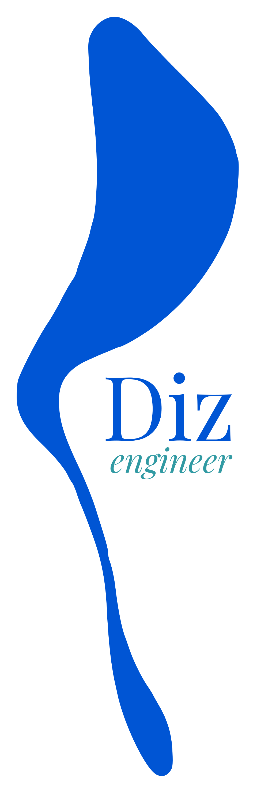
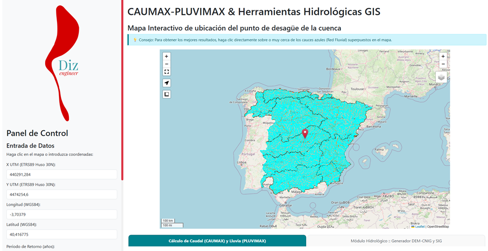
Durante un par de meses he estado trabajando codo con codo un par de horitas cada domingo con un sobrino que se empeñó en recuperar mis antiguos scripts de cuando yo trabajaba en proyectos, hace ya bastantes años. Muchos estaban escritos en Python y Matlab; otros en R, Visual Basic o incluso en software matemático. Su propuesta era aglutinar los diferentes cálculos y gráficos que realizaban bajo un mismo paquete de cálculo, también por temáticas, y tratar de implementarlo en una plataforma web, de forma que todo —en palabras suyas— “cobrara vida”.
Como le sobran inteligencia y pasión a partes iguales, y la cosa prometía (no dejaba de intrigarme pensar hasta dónde llegaría), decidí aceptar el reto y enfrascarme con él en tal proyecto, del que debo decir que he disfrutado muchísimo, más por su animada compañía y la luz de sus pensamientos, pero también porque me ha sorprendido ver cómo todo puede cambiar y mejorar en función de los recursos que se aprovechen. Como había todo tipo de cosas, decidimos empezar por una e ir avanzando poco a poco: así que empezamos por la hidrología…
Desde luego he de decir que la complejidad de algunos desarrollos ha requerido el uso de IA, fundamental para resolver cuestiones que un profano sería incapaz, tales como implementar Python en cálculos y procesos en un mapa Google, o dockerizar un desarrollo e implementarlo en una plataforma web, los sucesivos commits y deploys parciales, progresando secuencialmente en los debugs para corregir errores, etc., además de ayudar increíblemente con la programación, mejorando notablemente los algoritmos y sus tiempos de respuesta. Téngase en cuenta que no somos desarrolladores web, y lo hemos hecho solitos, superando muchas dificultades que nos eran ajenas…, de ahí también el problema fundamental y último que comentaré al final.
Comenzamos con la idea de una web-app destinada a desplegar todo el potencial del plugin de CAUMAX para QGIS pero superándolo con creces —ya que siempre pensé que se quedaba muy corto o que dejaba oculta la información que más suele interesarnos, supongo que para evitar un uso indiscriminado o inadecuado; pero cuando tienes la oportunidad de usar la tecnología a tu favor, ¿a quién se le ocurrió que lo adecuado era poner un censor?
Con esa idea conseguimos, tras algunas depuraciones y reajustes, un más que digno front-end en el que, en apenas 1 minuto de tiempo, teníamos a nuestra disposición todas las capas de información GIS (en formato ráster o vectorial y ajustadas al ámbito de estudio deseado), que nos daban lo mismo que CAUMAX pero:
El usuario puede ingresar su punto de estudio mediante un clic de ratón directamente en el mapa o introduciendo las coordenadas —tanto proyectadas como geográficas—; en cualquier caso, todas se actualizan al momento una vez elegido un método de introducción del punto.
Se obtiene la cuenca y los resultados del estudio tipo CAUMAX, pero completos y muy ampliados, es decir, con la tabla de cuantiles de las lluvias máximas y los caudales para los periodos de retorno habituales o introducidos por el usuario, además del correspondiente al Caudal Máximo Ordinario. Todos los resultados quedan explicitados y mostrados en el front-end.
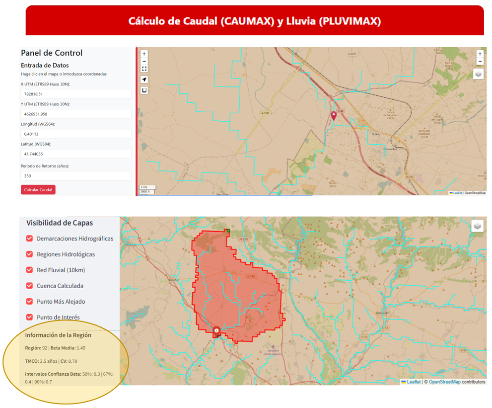
Como puede verse, las descargas GIS incluyen la Cuenca resultante, los Ríos, el DEM y el punto introducido. En este caso, todo queda en coordenadas proyectadas ETRS89 UTM zone 30N, dado que se trabaja con toda España (a pesar de las zonas faltantes). La transformación de CRS en caso necesario es inmediata en QGIS o similares. Igualmente las tablas son descargables en formato CSV.
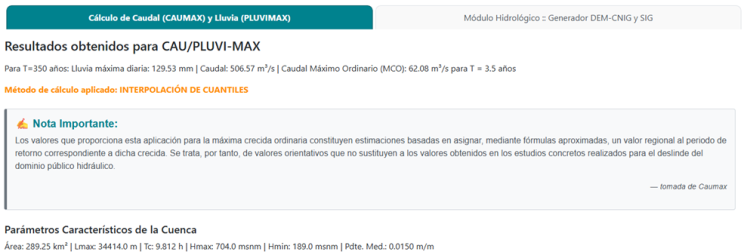
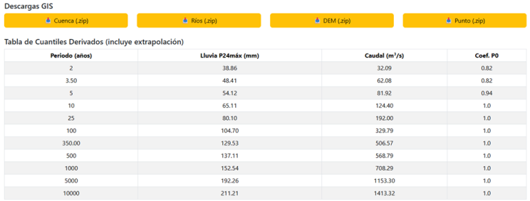

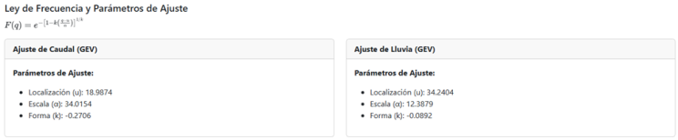
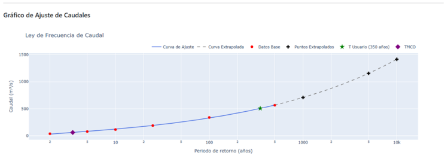
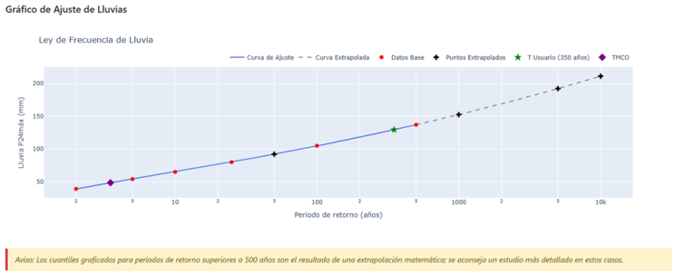
En la segunda pestaña se obtendrá todo sobre un DEM de 25 m de píxel…
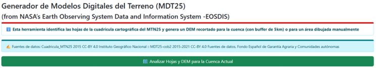
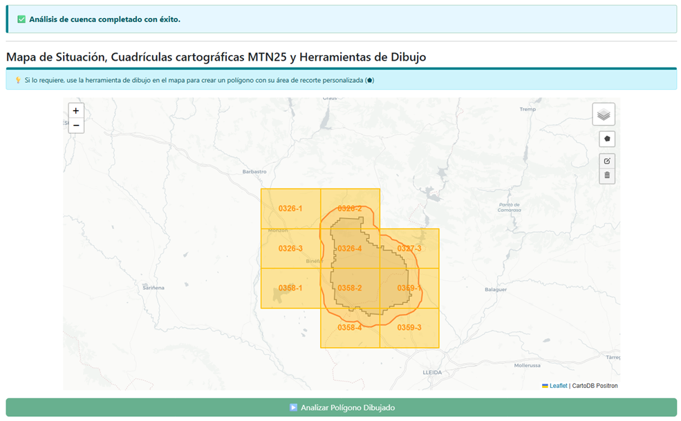
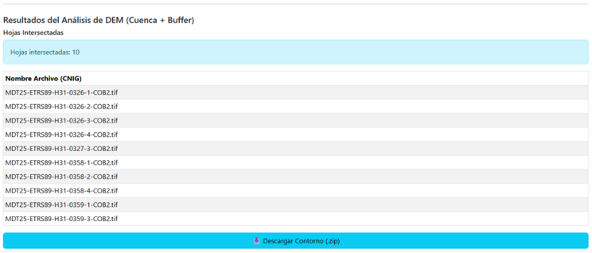
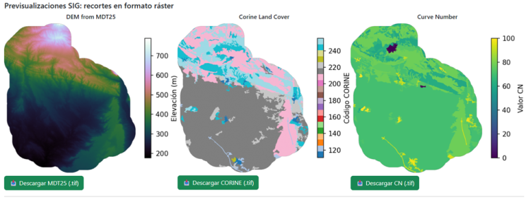
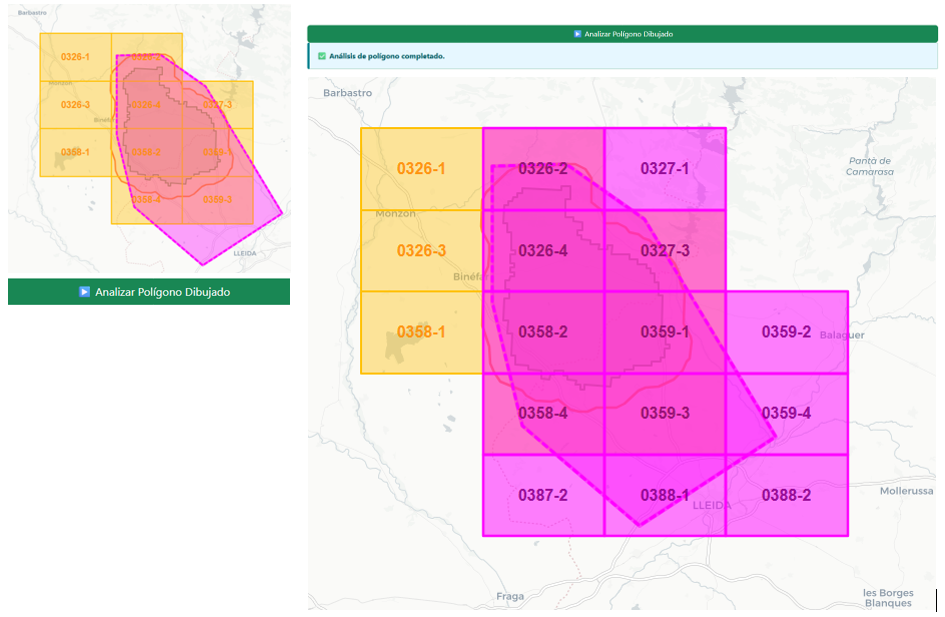
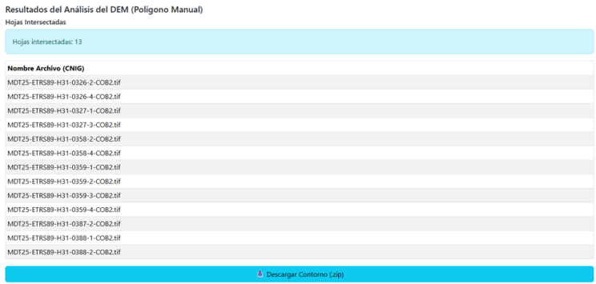
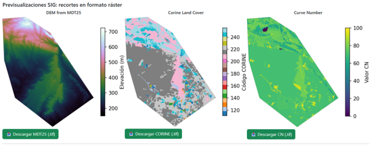
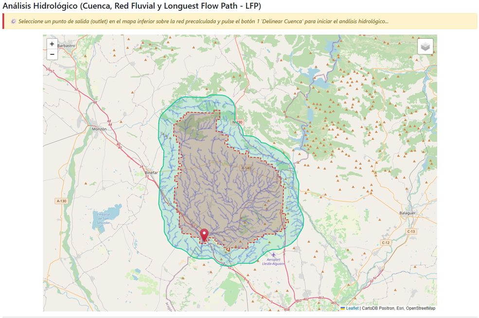
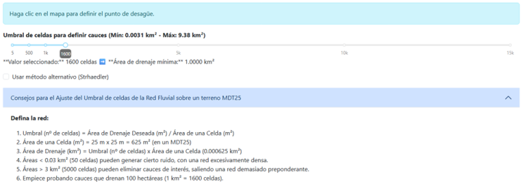
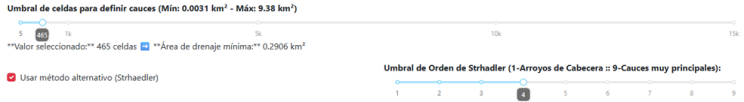
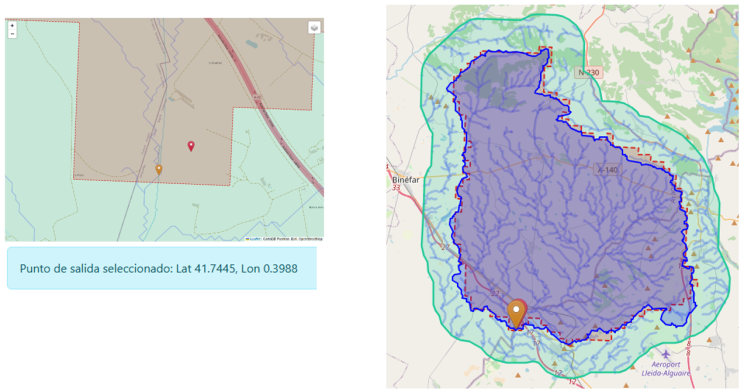
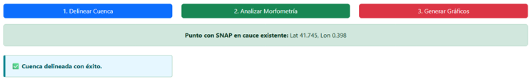
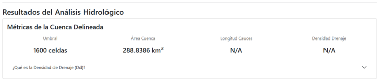
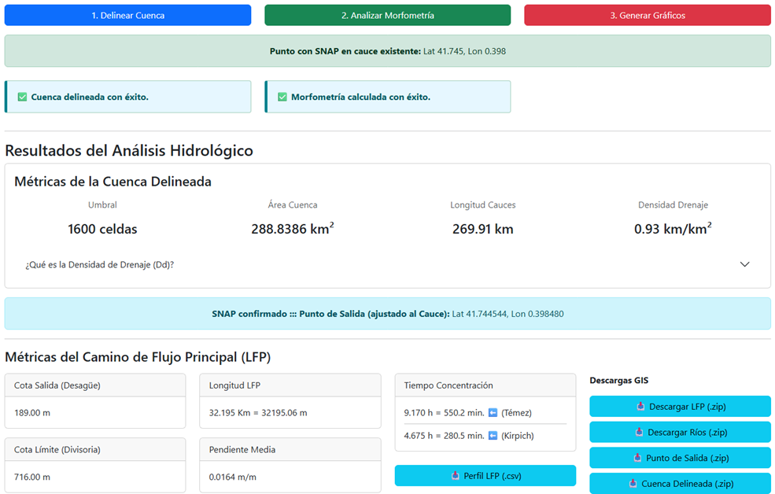
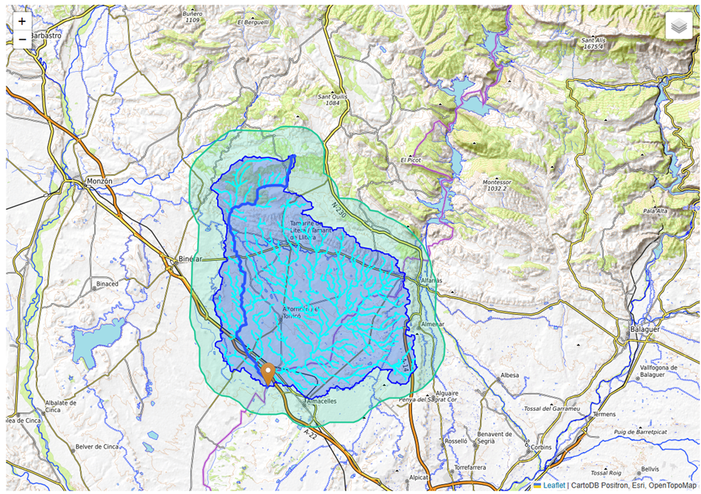
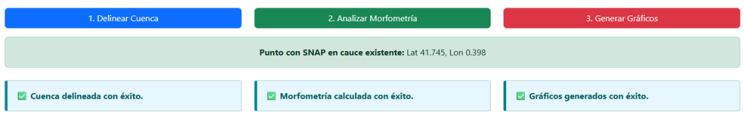
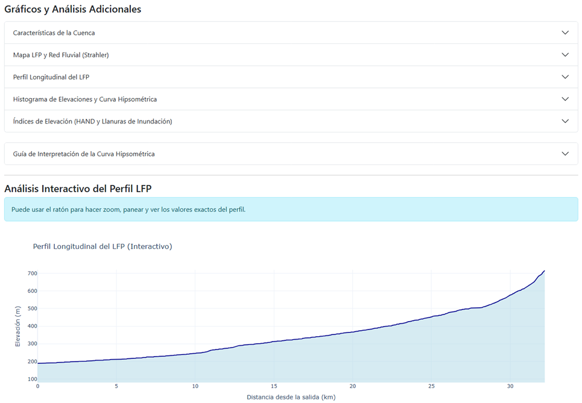
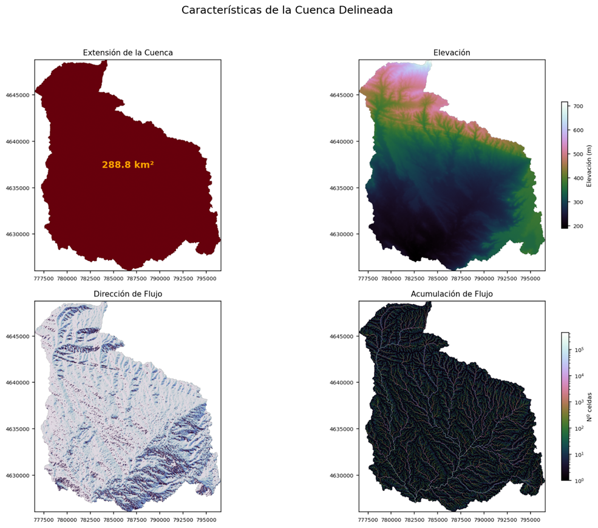
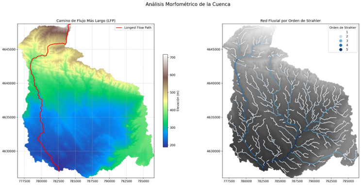
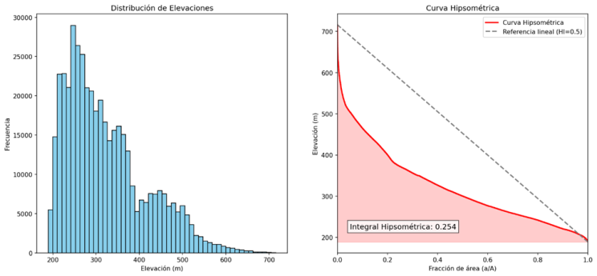
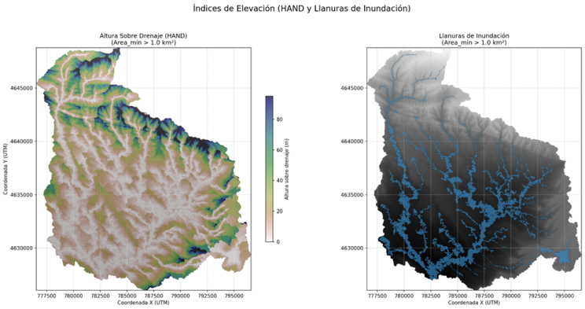
Pues que el uso de recursos es alto y en el momento en que lo pongamos a disposición en la web las plataformas de soporte empezarán a facturarnos por el tráfico en los servidores…, de ahí que requiera un precio, y aunque mi sobrino ha logrado conectarlo con una gestión integrada de cuentas de usuario mediante suscripciones de pago (todo un logro de su empeño), el deploy en Railway o plataformas similares se antoja caro para nosotros, sin saber si el precio de la suscripción nos cubrirá los costes. Por ahora lo tenemos en una habitación privada de GitHub, sin saber si algún día podremos compartirlo con todos…
En el vídeo comparo el clásico complemento CAUMAX (Mapa de Caudales Máximos) de QGIS con la web-app: los mismos cálculos hidrológicos, pero mucho más ágiles, con todos los resultados a la vez y con descargas GIS incluidas. Los ejemplos están cotejados con el manual de CAUMAX, la Confederación Hidrográfica del Ebro y el CEDEX — caudales clavados al m³/s — sobre un MDT de 25 m en lugar de los 500 m del plugin. El vídeo muestra la primera versión de la web-app; desde entonces se ha rediseñado y modernizado.
Duración ~1:01:12 · capítulos en la descripción · canal de YouTube
De aquel desarrollo inicial salieron dos rediseños modernos que funcionan distinto a la primera versión:
App-CAUMAX — la web-app completa de este artículo, rediseñada y modernizada: las pestañas 1 y 2 sobre DEM de 25 m, sin depender de Google.
arrancar_local.bat (Python 3.10+; instala las dependencias solo) y se abre en http://localhost:7860; para detenerla, doble clic en parar.bat. La primera vez descarga las capas GIS (demarcaciones, regiones, red fluvial, MDT…) del CNIG e IGN. Código.App-HidroMaps — la nueva, antes WhiteToolbox: el flujo rápido de dos clics (cuenca, desagüe, tiempo de concentración y leyes de frecuencia) con mapas OSM + Esri, sin depender de Google.
python app_visor.py → http://127.0.0.1:8050.